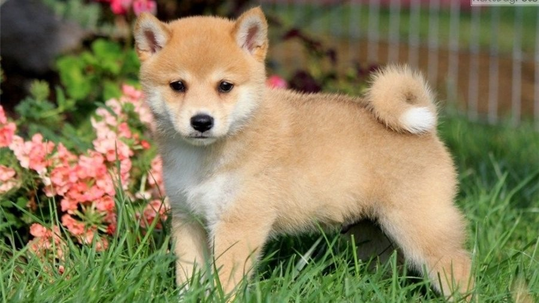

ShibaInu

origin
Japan
size
Medium
color
Others
type
Purebred
breed group
Non Sporting (AKC:1992)
character
Fluffy
temperament
Alert
Charming
Confident
Loyal
height
14-16 inches (36-41 cm)
weight
18-25 pounds (8-11 kg)
geography
Asia
overview
The Shiba Inu is moderately compact, being slightly longer than it is tall. It has typical traits of dogs from Northern heritage: small erect ears, thick fur, powerful body and curled tail. Its expression is bold, spirited and good-natured. The gait is light, quick and agile, with an effortless, smooth stride. The double coat consists of a strong straight outer coat with a soft undercoat, imparting great insulation. These traits enabled the shiba to hunt small game through dense cover.
history
The Shiba is the smallest of the Japanese native breeds, which include the Kai Inu, Hokkaido Inu, Kishu Inu, Shikoku Inu, Tosa Inu and the Akita Inu. Despite its smaller size it was bred to hunt small wild game, bear, boar and to flush birds. The name Shiba means, both small and brushwood in Japanese. It may have been named after the terrain the dogs hunted in or the color of the Shiba's coat, or perhaps the dog's size.
The word Inu means dog. As with many breeds, the second world war nearly did the breed in. After the war was over, several breeding programs worked to bring the breed back to safe numbers. The Shiba is one of the most popular breeds in Japan today and is gaining numbers in the USA. The Shiba Inu was recognized by the AKC in 1992. Some of the Shiba's talents include: hunting, tracking, watchdog, guarding, agility and performing tricks.